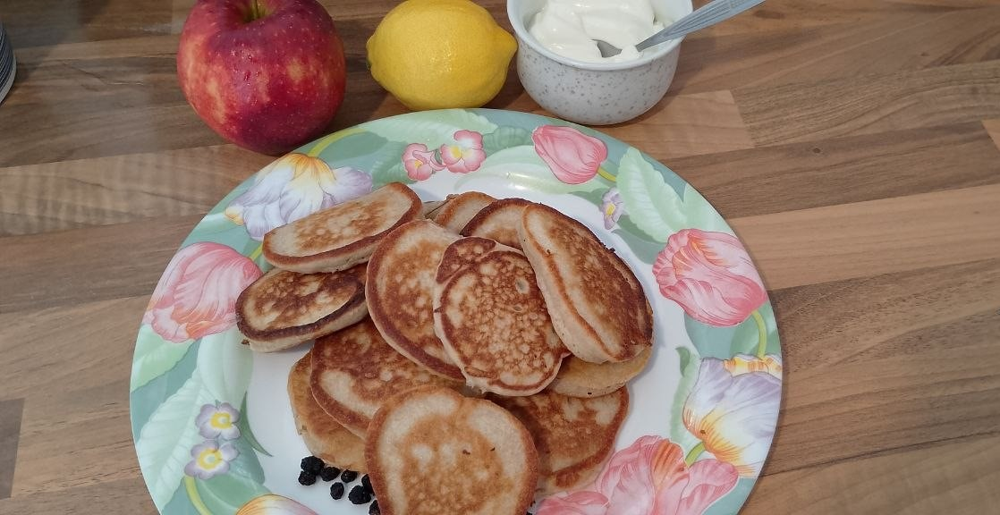
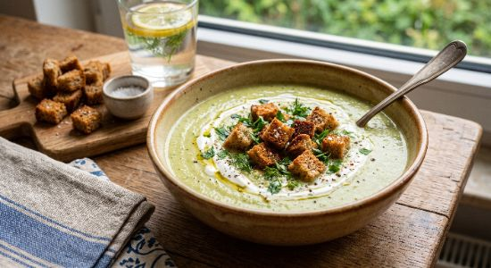
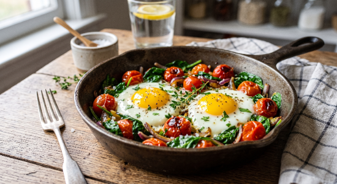
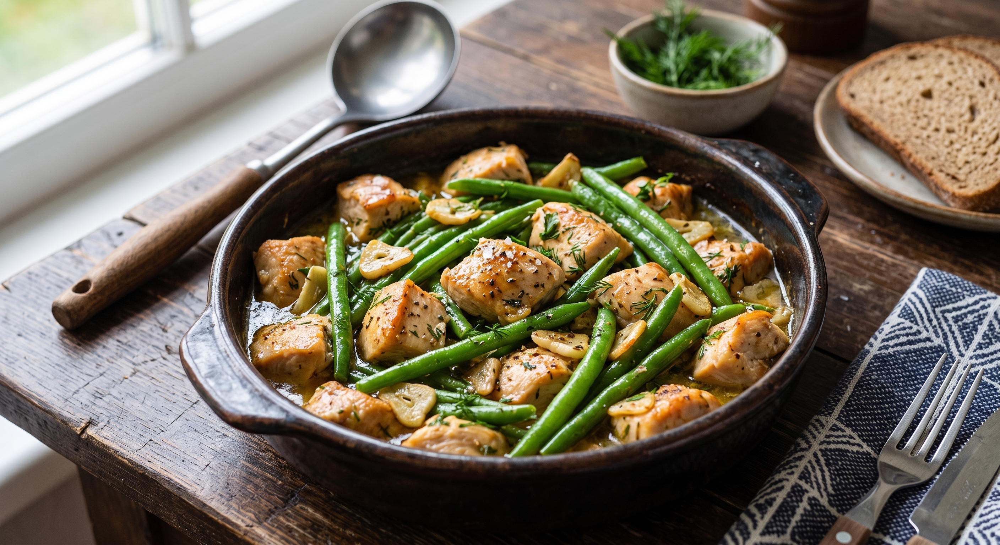
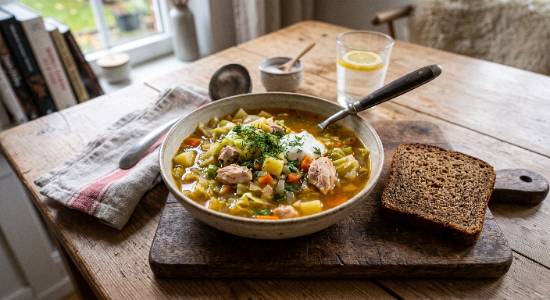
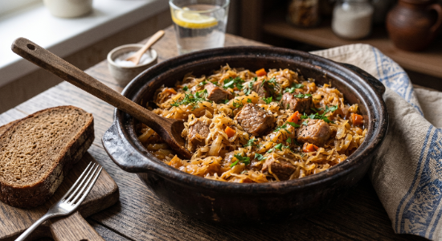
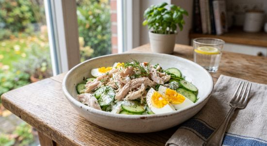

Рецепт Понедельник
Завтрак: Овсяноблин с творогом и зеленью (1.5 ХЕ) Обед: Зелёный борщ со щавелем и яйцом + 1 кусочек ржаного хлеба (1.6 ХЕ) Ужин: Запечённая лодочка из кабачка с фаршем из индейки (0.4 ХЕ)

Рецепт Вторник
Завтрак: Пышная овсяно-яблочная шарлотка на сковороде (1.8 ХЕ) Обед: Суп-пюре из брокколи и цветной капусты с сухариками из ржаного хлеба (1.2 ХЕ) Ужин: Нежные рыбные котлеты с брокколи (2 шт.) + свежий огурец (0.5 ХЕ)

Рецепт Среда
Завтрак: Яичница-глазунья из 2 яиц с помидорами и шпинатом (0.3 ХЕ) Обед: Гречка отварная (4 ст. л.) + тушёная печень с луком в сметане (1.8 ХЕ) Ужин: Ржаные пирожки с капустой и яйцом (2 шт.) + чашка чая (2.2 ХЕ)

Рецепт Четверг
Завтрак: Творожная запеканка без муки и сахара (с овсяными отрубями) (0.8 ХЕ) Обед: Рыбный суп из горбуши или ухи из белой рыбы (0.3 ХЕ) Ужин: Куриное филе, тушённое с стручковой фасолью и чесноком (0.5 ХЕ)

Рецепт Пятница
Завтрак: Овсяная каша на воде с добавлением 1% молока и корицы (2.0 ХЕ) Обед: Щи из свежей капусты с курицей + 1 кусочек ржаного хлеба (1.4 ХЕ) Ужин: Баклажаны, фаршированные индейкой и овощами под сыром (0.6 ХЕ)

Рецепт Суббота
Завтрак: Овсяно-яблочные оладьи на кефире (1.5 ХЕ) Обед: Тушёная квашеная капуста с постной свининой или индейкой (0.8 ХЕ) Ужин: Рыбные котлеты с брокколи (2 шт.) + салат из свежей капусты и огурца (0.6 ХЕ)

Рецепт Воскресенье
Завтрак: Омлет из 2 яиц с сыром и болгарским перцем (0.4 ХЕ) Обед: Запеченное куриное бедро без кожи + отварная перловка (3 ст. л.) (1.7 ХЕ) Ужин: Легкий салат из отварной грудки, огурца, яйца и греческого йогурта (0.2 ХЕ)
Полезные продукты и кухонная утварь
Рекомендованные ингредиенты, посуда для запекания и техника для здорового питания.
Овсяная шарлотка с яблоками на сковороде
Нежнейшая, пышная и с сочной яблочной кислинкой! Делюсь проверенным рецептом полезной шарлотки из овсяной муки, которую легко приготовить на сковороде всего за 15 минут. Осень уже близко, а значит, настало время уютных домашних чаепитий! Традиционная шарлотка из белой муки и сахара — не самый лучший выбор для диабетического и здорового меню. Но это совершенно не повод отказываться от любимого вкуса детства. Сегодня мы приготовим овсяную шарлотку с яблоками, которая получается невероятно сочной, нежной и при этом обладает низким гликемическим индексом. 💡 В чём польза этого рецепта? • Медленные углеводы: Овсяная мука дает долгое чувство сытости и не вызывает резких прыжков сахара в крови. • Без лишнего жира и сахара: Готовится с минимальным добавлением масла, а естественную сладость дают запечённые яблоки. • Быстрота: Не нужно разогревать духовку — всё готовится на обычной сковороде под крышкой. 🛒 Ингредиенты: • Яблоко (среднее, лучше с кислинкой): 1 шт. • Овсяная мука (или перемолотые хлопья): 4–5 ст. л. • Куриное яйцо: 1 шт. • Кефир или натуральный йогурт: 50 мл. • Разрыхлитель: 0.5 ч. л. • Корица, подсластитель (по вкусу): щепотка. • Капля растительного или сливочного масла: для смазывания сковороды. 👨🍳 Пошаговый процесс приготовления: 1. Подготовка яблок: Яблоко промываем, очищаем от серединки и нарезаем тонкими дольками или небольшими кубиками. 2. Замешиваем тесто: В глубокой миске слегка взбиваем яйцо с кефиром. Добавляем овсяную муку, разрыхлитель, корицу и любимый подсластитель. Хорошо перемешиваем до состояния густой сметаны. 3. Соединяем: Высыпаем яблоки в тесто или красиво выкладываем их на дно слегка смазанной сковороды. 4. Выпекаем: Выливаем тесто на сковороду, накрываем крышкой и готовим на самом маленьком огне около 10–12 минут. 5. Финальный штрих: Аккуратно переворачиваем шарлотку с помощью широкой лопатки или плоской тарелки и томим под крышкой ещё 3–4 минуты до золотистой корочки. ☕ С чем подавать? Подавайте шарлотку горячей, выложив на тарелку. Она идеально сочетается с ложкой прохладной домашней сметаны, свежими ягодами и пиалкой крепкого ароматизированного чая или пуэра!